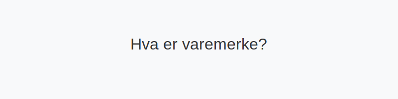

Varemerke er et juridisk beskyttet kjennetegn som identifiserer varer eller tjenester og gir rettighetshaver enerett til bruk. I norsk regnskap klassifiseres varemerker som immaterielle eiendeler og behandles etter prinsippene for aktivering, amortisering og mulige nedskrivninger.
For en bredere oversikt over immaterielle eiendeler, se Hva er imaterielle eiendeler?.

1. Definisjon og rettslig grunnlag
1.1 Hva er et varemerke?
Et varemerke kan være et ord, figur, bokstav, tall, fargekombinasjon eller en kombinasjon av disse som skiller en virksomhets varer eller tjenester fra andres. For å registreres må varemerket oppfylle krav om:
- Særpreg: Varemerket må kunne skilles klart fra andre kjennetegn.
- Ikke-villedende karakter: Det må ikke villede om produktenes art eller egenskaper.
- Registrerbart: Oppfylle vilkårene i varemerkeloven og godkjennes av Patentstyret.
1.2 Varemerke vs. andre immaterielle rettigheter
| Rettighetstype | Eksempler |
|---|---|
| Patent | Hva er patent? |
| Varemerke | Hva er varemerke? |
| Opphavsrett | Hva er opphavsrett? |
2. Regnskapsføring av varemerke
2.1 Aktivering i balansen
Varemerker kan aktiveres i balansen hvis de er anskaffet eller utviklet i virksomheten og det er sannsynlig at de vil gi fremtidige økonomiske fordeler. Aktivering følger generelt NRS og regnskapsloven.
| Konto | Beskrivelse | Type |
|---|---|---|
| 1050 Varemerker | Immaterielt anleggsmiddel | Anleggsmiddel immateriell |
2.2 Amortisering og avskrivningsperiode
Varemerker amortiseres vanligvis lineært over levetiden. Typiske perioder:
| Periode | Kommentar |
|---|---|
| 5 år | Minimum, krever dokumentasjon |
| 10 år | Vanlig praksis |
| 15 år | Maksimum, og sjeldent valgt |
Se også Hva er amortisering?.
2.3 Nedskrivning
Ved indikasjoner på at et varemerke ikke lenger har forventet verdi, må virksomheten gjøre vurdering av nedskrivning. Les mer i Hva er nedskrivning?.
3. Verdivurdering og vurderingsmodeller
Vanlig verdivurdering følger enten historisk kost eller virkelig verdi ved oppkjøp av varemerke. Kostprisprinsippet innebærer at anskaffelseskost med eventuelle direkte kostnader legges til grunn. Se Hva er kostpris?.
4. Eksempel på amortisering
| År | Bokført verdi ved start | Årlig amortisering | Bokført verdi ved slutt |
|---|---|---|---|
| 0 | 1 000 000 kr | - | 1 000 000 kr |
| 1 | 1 000 000 kr | 100 000 kr | 900 000 kr |
| 2 | 900 000 kr | 100 000 kr | 800 000 kr |
5. Oppsummering
Varemerker er en sentral immateriell eiendel som kan skape betydelig konkurransefortrinn. Korrekt regnskapsføring krever håndtering av aktivering, amortisering og eventuelle nedskrivninger i henhold til norske regnskapsstandarder.